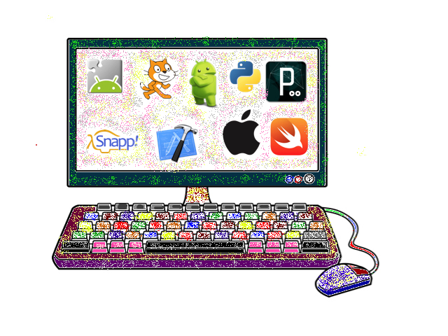

Home
About Me
Portfolio
About me (aka Mr. T)

I’m Kevin Tambara, Mr. T to my students, parents, and colleagues. I was an electrical engineer for many years before becoming a teacher. I’ve taught science (physics, biology, astronomy), math (algebra, calculus), and computer science (various languages, robotics, electronics) for 11 years both at the high school and middle school levels. For the past five years I’ve been at an amazing school, Bert Lynn Middle School (Go Leopards!) within the Torrance Unified School District in Los Angeles, California. The faculty at my school are all very dedicated and caring, the students are fantastic and motivated (mostly), and the parents are extremely supportive (all).